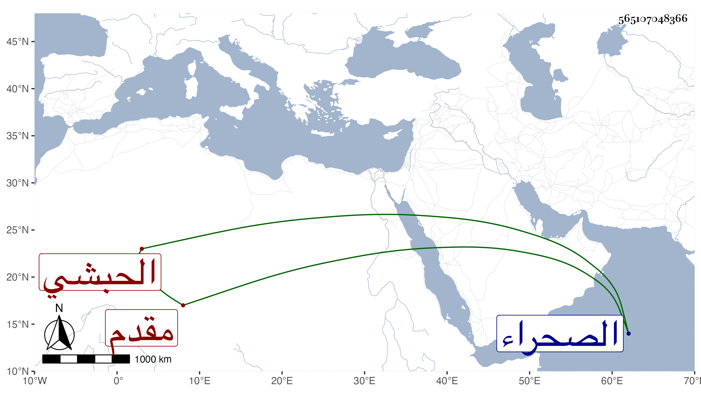

0902Sakhawi.DawLamic.ITO20230111-ara1.EIS1600.565107048366
Biography ID: 565107048366
922
ياقوت الأرغو نشاوي الحبشي مقدم المماليك تنقل بعد سيده أمير مجلس الظاهر برقوق إلى أن صار مقدم المماليك وطالت أيامه لحسن سيرته وتواضعه وسكونه وبره ومعروفه مع بشاشته وصباحة وجهه ، وحج أمير المحمل مرتين . مات مطعونا في يوم الاثنين ثاني رجب سنة ثلاث وثلاثين ودفن بتربته التي أنشأها بالصحراء بعد أن رتب فيها شيخا وطلبة وقراء ووقف عليها وقفا جيدا وكان لا بأس به واستقر عوضه نائبه خشقدم .
